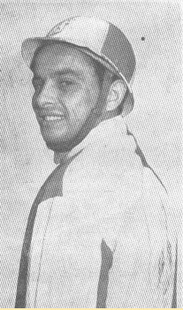
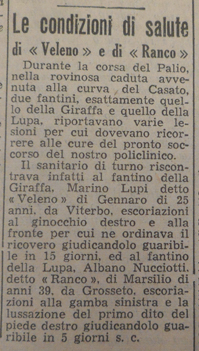

|
(Veleno) 1/3 Nato a Acquapendente il 13 novembre 1928 Morto a Acquapendente il 6 marzo 1974 
1 Palio straordinario.    Il trafiletto è tratto da "La Nazione" del 3 luglio 1954
Esordisce al Palio di Siena del 2 luglio 1954, montando il barbero Pinocchio per la Contrada della Giraffa. Ad agosto arriva per lui la grande occasione: la Giraffa lo ingaggia per montare Gaudenzia, cavalla abitualmente allenata da Vittorino, presente in Piazza per il Nicchio. Veleno e Gaudenzia partono bene e vanno subito in testa, ma esattamente a metà gara Veleno cade, lasciando Gaudenzia scossa, mentre Vittorino su Rosella prende il comando. Gaudenzia però non molla, e nonostante Vittorino faccia di tutto per impedirle di passare, lo sorpassa proprio sul traguardo, vincendo così il Palio per la Giraffa. Veleno correrà ancora un Palio, quello straordinario del settembre 1954 per il Drago. Nonostante sembrasse avviato ad una buona carriera al Palio di Siena, Veleno corse solo alcune prove negli anni successivi, senza più prendere parte al Palio. Morì ad Acquapendente, ad appena 46 anni. |